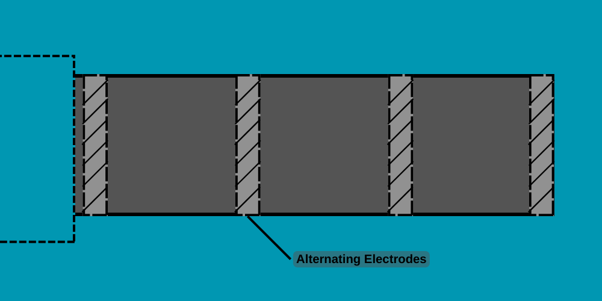
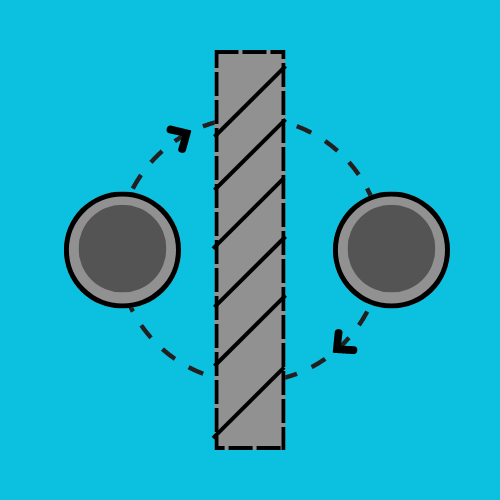
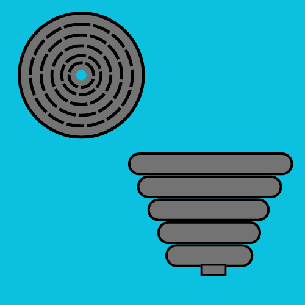

OPTIMIZATION OF THE ION THRUSTER
All thrusters work on the basic principles of Newton's third law of motion, which simply denotes that when a force is applied in one direction then an equal force is also applied in the opposite direction. Given the equation: Force = Mass x Acceleration Thrust can be increased in an ion thruster by simply increasing the mass of ions or increasing its acceleration.
OPTIMIZATION BY MASS
Being honest I've failed to fully understand the benefits of using Xenon rather than other elements with a higher atomic mass but I am sure it's for a good reason. Considering my lack of knowledge on the topic I can't dwell deeply into the topic when considering how to optimize the ion thruster.
OPTIMIZATION BY ACCELERATION
Whilst pondering on the enhancement of the accelerator in the ion thruster, I took into consideration two designs.
1. THE MULTIPLE STAGE ACCELERATOR:
Taking inspiration from what some may know as a rail gun, the multiple stage accelerator utilizes additional stages which theoretically should result in an increase in acceleration.
 The charge on the plates would also need to be alternated to avoid the stagnation of the ion in a particular section. The only downside to this design might be the power consumption in comparison to the thrust output. Basically I fear the design won't be efficient.
2. THE CIRCULAR ACCELERATOR:
I believe this design has a few advantages over the other design. One of them being that it's relatively smaller and would take less space, while still allowing the ion to travel a greater distance, so as to gain more acceleration.
The design would prove rather difficult compared to the multiple stage accelerator. I imagine the possible utilization of electromagnets in order to guide the ion through the accelerator. I still need more time to fully comprehend how the design would work out, so this is just a rough sketch of what and how I imagine it should work.
In conclusion, like all pieces of technology the ion thruster has a lot of possible designs and spaces for improvement, but we can't forget that thrust can also be produced in numerous other ways. I personally have my eyes set on the utilization of fusion energy to create an engine for interstellar travel but for now ion thrust isn't such a bad idea.